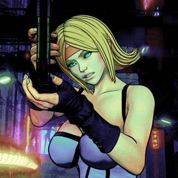
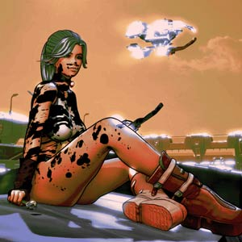
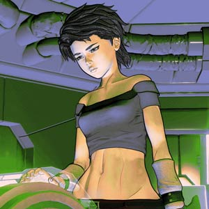
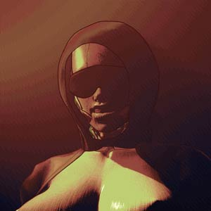

Hunter EdevaneFull name: Hunter Patricia Edevane Year of Birth: Birth of the Layer 75452 Occupation: Transporter, fugitive. Profile: Tends to prefer violent solutions to simple problems. Likes to drink, shoot and play holographic games. Relatives: Ros Edevane (daughter), Aisling Edevane (sister), Thomas Edevane (father), Aisling Edevane (mother, deceased). |

Ros EdevaneFull name: Ros Bernice Edevane Year of Birth: Birth of the Layer 75470 Occupation: Transporter, fugitive. Profile: Has trouble displaying empathy, self-centered. Feels at home near large machines, prefers bad boys, tends to lose shirt. Relatives: Hunter Edevane (mother), Aisling Edevane (aunt), Thomas Edevane (grandfather), Aisling Edevane (grandmother, deceased), Anna Rose Sellers (gene donor). |

Marie CruzFull name: Marie Cruz Year of Birth: Birth of the Layer 75469 Occupation: Medic, fugitive. Profile: Distrustful, tendency for subterfuge, dutiful. Feels uneasy around clones, has a need for belonging. Relatives: Mother (deceased, name unknown) |

Lady Rose/Aunt Annie.Full name: Anna Rose Sellers Year of Birth: Birth of the Layer 75447 Occupation: Guild Administrator Profile: Promiscuous, treacherous, disloyal, strict, ruthless. Uses sex as a weapon. Enjoys fine wine and orchestral music. Relatives: Ros Edevane (clone). |